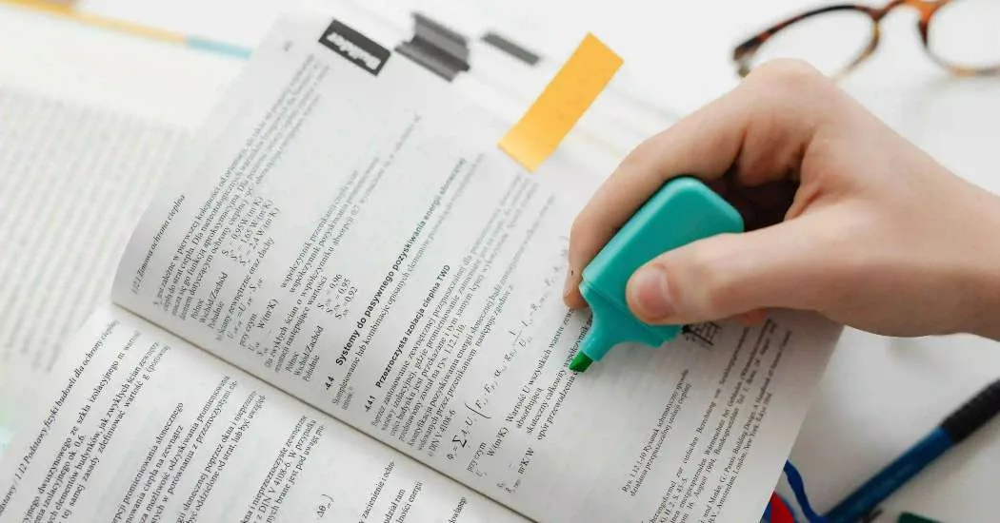
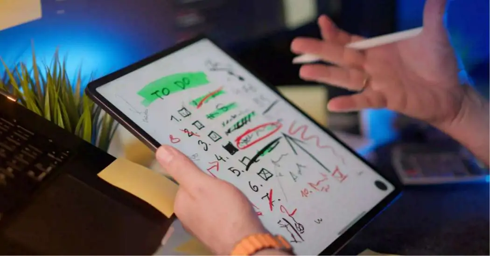
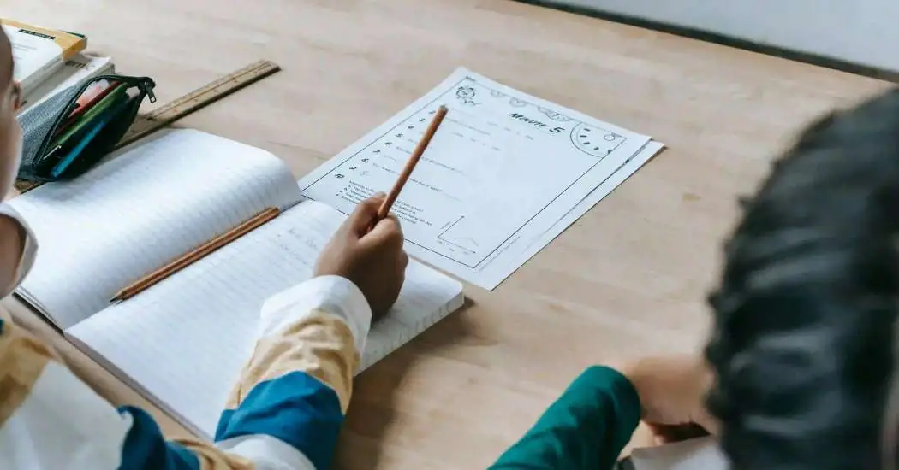
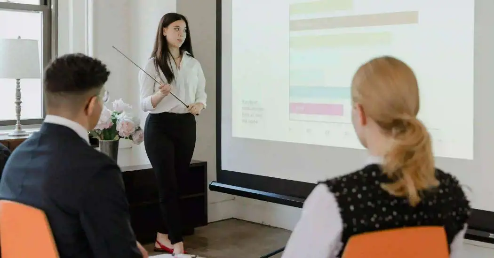
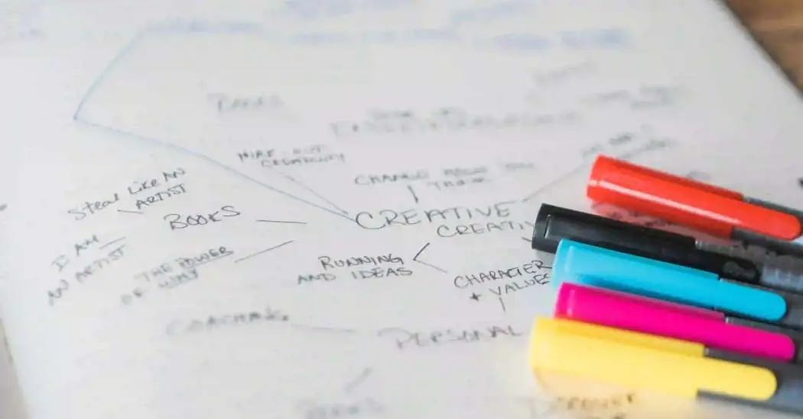
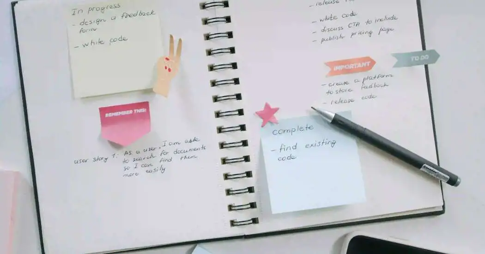
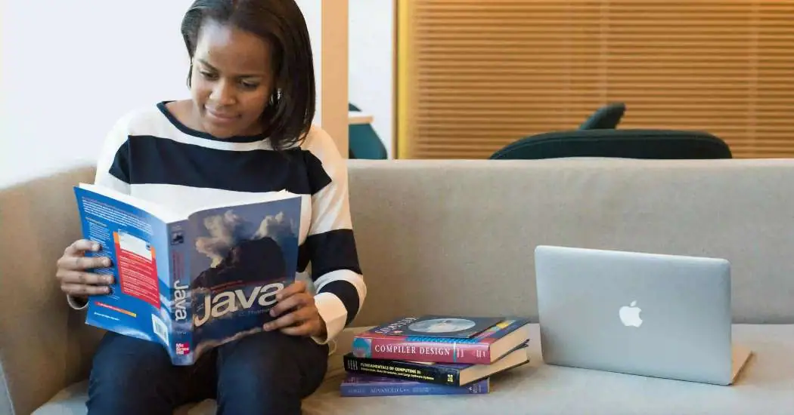

Tesis
Cómo hacer una tesis paso a paso
Una guía para entender la estructura general de una tesis, cómo organizar cada apartado y por dónde conviene empezar si todavía no sabes cómo aterrizar tu tema.
Leer artículo ¿Qué tarea necesitas?
¿Qué tarea necesitas?
En este blog encontrarás artículos pensados para ayudarte a entender mejor cómo hacer una tesis, redactar apartados de investigación, usar formato APA y desarrollar distintos tipos de trabajos escolares paso a paso.

Puedes revisar solo artículos sobre tesis, apartados de investigación, APA o trabajos escolares generales.
Estos artículos suelen ser de los más útiles para estudiantes que están empezando una tesis o necesitan estructurar mejor sus trabajos.
Una guía para entender la estructura general de una tesis, cómo organizar cada apartado y por dónde conviene empezar si todavía no sabes cómo aterrizar tu tema.
Leer artículo
Aprende a organizar autores, ideas y antecedentes para que tu marco teórico tenga orden y sentido.
Leer artículo
Una guía sencilla para entender cómo escribir referencias bibliográficas correctamente.
Leer artículoAquí tienes todos los artículos organizados para que puedas encontrar con más facilidad el tema que estás buscando.
Guía general para entender la estructura y el proceso de elaboración de una tesis.
Leer artículoConsejos para organizar autores, teorías y antecedentes dentro de tu investigación.
Leer artículo
Aprende qué incluir en una introducción y cómo redactarla de forma clara.
Leer artículo
Descubre cómo formular objetivos claros, coherentes y bien enfocados.
Leer artículo
Una guía para explicar con claridad la situación que origina tu investigación.
Leer artículoAprende a explicar por qué tu tema vale la pena y para qué puede servir.
Leer artículoGuía para redactar hipótesis de forma lógica y relacionada con tu problema.
Leer artículo
Ideas para encontrar un tema que sí puedas desarrollar y que tenga sentido para tu carrera.
Leer artículoEntiende cómo describir el tipo de estudio, enfoque, técnicas e instrumentos.
Leer artículoAprende a cerrar tu trabajo retomando objetivos, resultados y aportes.
Leer artículoConoce la estructura básica de referencias para libros, artículos, tesis y páginas web.
Leer artículo
Aprende cuándo usar autor, año, cita textual o parafraseo dentro del contenido.
Leer artículo
Guía para entender la estructura de una tesina y cómo organizarla bien.
Leer artículoConoce qué apartados suele llevar un protocolo y cómo estructurarlo.
Leer artículo
Descubre cómo revisar investigaciones previas y organizarlas dentro de tu trabajo.
Leer artículoAprende a seleccionar y redactar estudios previos relacionados con tu tema.
Leer artículoConsejos para formular una pregunta clara, delimitada y útil para tu estudio.
Leer artículoAprende a acotar el tema para que sea más realista y fácil de desarrollar.
Leer artículo
Entiende cómo presentar hallazgos e interpretarlos dentro de tu trabajo.
Leer artículoGuía para definir conceptos clave y explicar su relación con el tema.
Leer artículoConsejos para organizar apartados y subapartados de forma lógica.
Leer artículoUna guía pensada para estudiantes que todavía no saben por dónde arrancar.
Leer artículoAprende a estructurar introducción, desarrollo y conclusión dentro de un ensayo.
Leer artículoDescubre cómo desarrollar una monografía con mejor orden y profundidad.
Leer artículo
Guía sencilla para organizar ideas y conectarlas visualmente.
Leer artículo
Aprende a contrastar información de forma clara y bien ordenada.
Leer artículoConsejos para resumir, analizar y opinar sobre un texto o contenido.
Leer artículoAprende a cerrar tus trabajos retomando ideas principales sin repetir demasiado.
Leer artículoGuía rápida para redactar una introducción clara, breve y bien enfocada.
Leer artículo
Descubre cómo resumir, organizar y comentar una lectura de forma correcta.
Leer artículoPuedes mandarme tu actividad por WhatsApp y revisamos si te puedo apoyar según la fecha de entrega, el tipo de trabajo y el nivel que necesitas.
En el blog de Te Hago La Tarea compartimos artículos sobre cómo hacer una tesis, cómo redactar un marco teórico, cómo escribir objetivos de investigación, cómo usar formato APA y cómo desarrollar distintos trabajos escolares paso a paso.
Aquí puedes encontrar contenido útil sobre metodología, antecedentes, hipótesis, conclusiones, estado del arte, introducciones y otros apartados importantes de la investigación académica.